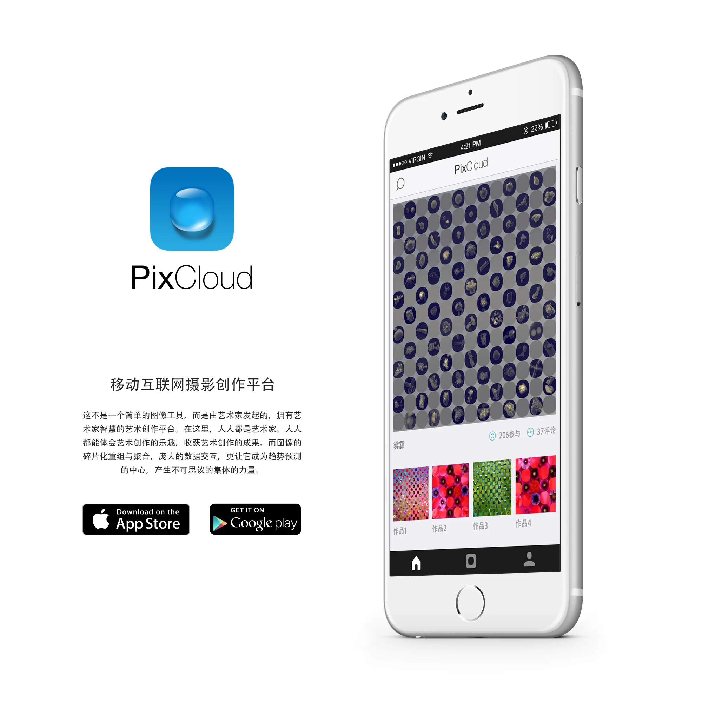
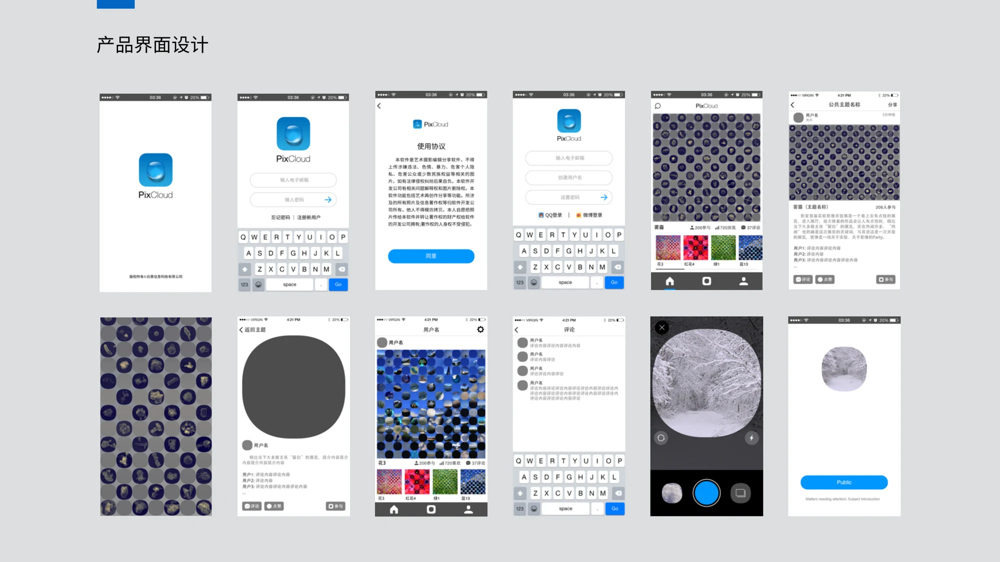
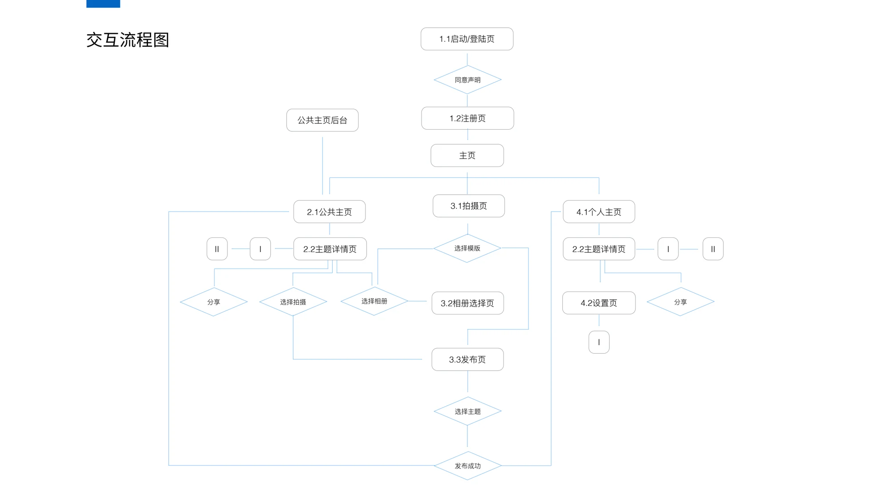
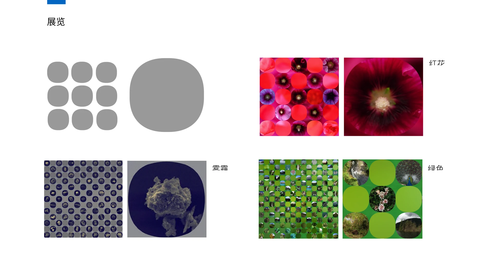
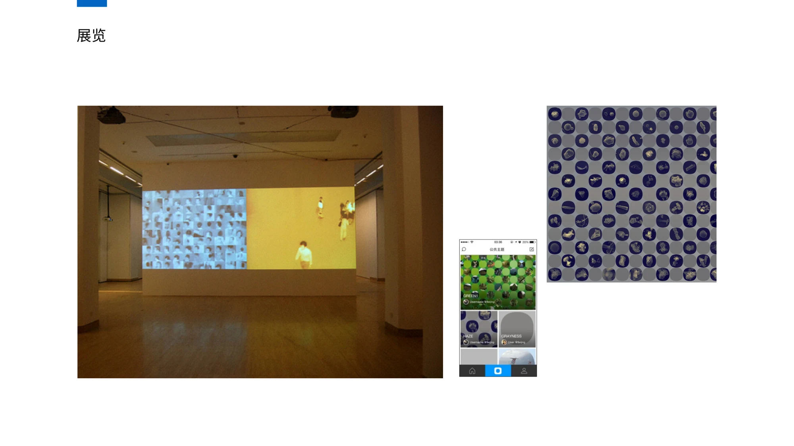

由艺术构想走向移动创作
PixCloud 云景是由艺术家李天元发起的移动互联网摄影创作平台。它将图像的碎片化重组与聚合转化为一种参与式创作方式，让普通人也能通过拍摄、组合与分享体验艺术创作。
参与项目的 App 开发、交互设计与视觉设计，将艺术构想转化为移动端的创作流程与界面。
将摄影的碎片重组，让个人创作汇入共同的艺术作品。

PixCloud 云景是由艺术家李天元发起的移动互联网摄影创作平台。它将图像的碎片化重组与聚合转化为一种参与式创作方式，让普通人也能通过拍摄、组合与分享体验艺术创作。
参与项目的 App 开发、交互设计与视觉设计，将艺术构想转化为移动端的创作流程与界面。
围绕主题查看作品，进入拍摄与选择流程，再将图像发布到主题中。单张照片既能被独立观看，也能够成为更大图像组合的一部分。

界面围绕主页、拍摄与个人主页组织。主题详情连接作品浏览与参与创作，拍摄与选择流程连接个人观察和共同主题。

这段约 1 分 39 秒的原始演示节选，保留了当时的移动端创作流程；网页版本略去了开头的登录片段。
图像在不同尺度与排列中形成新的观看方式。原始资料中的花卉、雾霾、绿色等主题，以及展示空间中的呈现，记录了这一创作方向。

